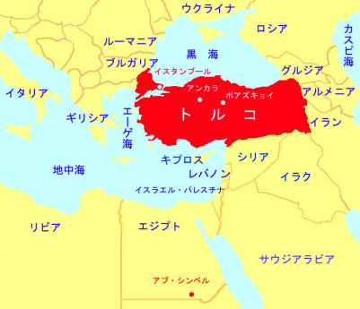

|
||
| ついに見つけたカデシュ条約の粘土板（前13 世紀、ハットゥシャ）楔形文字で書かれている。 |
戦車の浮き彫り ヒッタイトは戦車に鉄の車軸を用いたという。 |
| トルコのボアズキョイに ヒッタイト帝国の遺跡を訪ねる |
| トルコのアナトリア高原のボアズキョイ（古代名ハットゥシャ）に、ヒッタイト帝国の遺跡を訪ねた。ヒッタイト帝国は前１４〜１２世紀、鉄と軽戦車を駆使しながら、アナトリアに帝国を築き、古代中東世界をエジプトと二分するほどの勢力を持っに至ったという。 |
| 見たい項目をクリックして下さい | |||||||||
|
| 会員からの投稿（詳細-５） |
| 史上最古の和平条約を結んだエジプトとヒッタイト ４０００年前に鉄を実用化した古代帝国の物語 |
|
| は じ め に |
| 前４世紀中頃の北九州の遺跡で、大陸からの輸入品と思われる鉄斧が出土している。我国で製鉄が始まったのは、３世紀頃
（弥生時代後期）であろう。武器や加工具として使われた鉄器が、やがて農耕具に使用されるようになると稲作の生産性は著しく向上したと想像される。 では、世界で最初に鉄器が使用されたのは、 「いつ？」、「どこで？」 だろうか。 定年退職して、海外観光旅行に行けるようになったとき、歴史の古い地域から順に行ってみようと思った。エジプト、ギリシア、イタリア、トルコの順である。エジプトのアブ・シンベル神殿を訪ねたとき、「エジプトのラムセス２世がアナトリア（現トルコ）のヒッタイト帝国と戦争して、戦勝の壁画（浮彫り）を描いている。ところが本当は、さんざんな目に遭い和平条約を締結したことが、ヒッタイト帝国の粘土板の記録に書かかれている。エジプトの敗因は、ヒッタイトが鉄を使用していたからだ」 という話を聞いた。 そこで、エジプトに次いで、トルコのアナトリア高原へ 「鉄探しの旅」に出かけた。 |
 |
| エジプトのアブ・シンベル神殿 |
| エジプトを訪ねたのは１９９９年１０月。ナイル川を遡ったナセル湖の上流に、アブ・シンベル神殿（大神殿と小神殿）がある。この神殿は、ナセル大統領が1971年に完成したアスワン・ハイダムにより水中に没することになり、ユネスコの基金で62m高い所へ移設されたことでも有名である。 大神殿の壁画（浮彫り）に、エジプトのラムセス２世（在位前1279-1213年）が、ヒッタイト帝国のムワタリ（在位前1315-1282）とシリアのガデシュで戦った勇ましい戦闘場面＊が描かれている。浮彫りに刻まれた碑文によると、エジプトはヒッタイトを打ちのめしたことになっているが、実際はヒッタイト側の完勝で、ラムセス２世とムワタリとの間で取り交わした和平条約の粘土板が、トルコのイスタンブール考古学博物館に展示されているという。 ＊戦闘は、前1275年（？）というから、ムワタリは退位していたかもしれない |
| アブ・シンベル大神殿 ラムセス２世の坐像４体（像高20m） |
大神殿の内部の浮彫り ラムセス２世とヒッタイトとの戦闘場面 |
| トルコのイスタンブール考古学博物館 |
| エジプト訪問の２年半後、２００２年５月にトルコを訪ねた。イスタンブール考古学博物館の展示の中から、待望の楔形文字で書かれたカデシュ条約の粘土板を見つけた時の興奮は今でも忘れられない。私には読めないが、この粘土板には、「エジプトとヒッタイトの間の相互不可侵、第三国から侵略されたときの相互援助」
が刻まれているという。 アナトリア高原の小国、ヒッタイト帝国が当時の超大国エジプトと平等条約を結べたのは、ヒッタイト帝国が鉄を実用化しており、武器や戦車の車軸に鉄を使用していたからではないかといわれている。次は、どうしても鉄に関する遺跡と遺物を見たいという願望が高まる。 |
|
||
| ついに見つけたカデシュ条約の粘土板（前13 世紀、ハットゥシャ）楔形文字で書かれている。 |
戦車の浮き彫り ヒッタイトは戦車に鉄の車軸を用いたという。 |
| トルコのボアズキョイに ヒッタイト帝国の遺跡を訪ねる |
| トルコのアナトリア高原のボアズキョイ（古代名ハットゥシャ）に、ヒッタイト帝国の遺跡を訪ねた。ヒッタイト帝国は前１４〜１２世紀、鉄と軽戦車を駆使しながら、アナトリアに帝国を築き、古代中東世界をエジプトと二分するほどの勢力を持っに至ったという。 |
| 王の門の柱石がずれないように、鉄棒が挿入されている。さすが鉄を実用化したヒッタイト帝国である。（前14世紀） | ||
| 「王の門」の城内側の浮き彫りは複製である。オリジナルはアンカラのアナトリア文明博物館にある。複製はわざと色を変えてある。 | こちらには鉄棒を挿入する穴が開けられている。 |
| トルコのアンカラのアナトリア文明博物館 |
| 最後に、トルコの首都アンカラにあるアナトリア文明博物館を訪ねた。ここでボアズキョイの少し北にあるアラジャホユックの前2500〜2200年の文化層から出土した金・鉄製の短剣を見ることが出来た。この文化層は、ヒッタイト帝国（前1460〜1190？）よりも740年以上古い時代である。そうなると、鉄の発明はヒッタイト帝国の前のプロトヒッタイトということになる。なぞは深まるばかりである。 残念ながら、ここには製鉄所の跡や鉄滓の展示は見当たらなかった。文献によると、アラジャホユックの博物館にあるという。 （大村幸弘著 「鉄を生みだした帝国」 日本放送出版協会） |
| 金・鉄製の短剣 ヒッタイト帝国よりも古いプロトヒッタイト時代のものらしい。 |
戦闘神浮き彫り ハットゥシャの王の門にあったレリーフのオリジナル |
| お わ り に |
| 我国では鉄器は、武器または加工具として前４世紀中頃に伝来したと思われる。それよりも約2000年も前にアナトリア高原で実用されていたことは、驚きである。それにも増して、直線距離で2000ｋｍも離れたエジプトのアブ・シンベルとトルコのアナトリアの両方にカデシュの戦いの記録（前1275年？）が残されているのを目の当りにして、人類の歴史の壮大さに圧倒された。 カデシュの戦いの後の歴史上の出来事を見ると、アレクサンドロス大王が東征の帰りに病死したのが前323年、エジプト最後の王クレオパトラがローマのカエサル（シーザー）との子カエサリオンを連れてアントニウストともに逃れる途中自殺したのが前30年、アウグストゥスがローマ帝国の初代皇帝になったのが前27年。これらは、カデシュの戦いから952年〜1248年も後のことである。 偶然にも、ここで述べたことに丁度対応するテレビ番組が先日放映された。ご覧になられた方も多いと思うが、録画してあるのでご希望の方には差し上げます。 |
| ＮＨＫスペシャル トルコ・文明の十字路② よみがえる鉄の王国ヒッタイト ２００３．８．１７ ２１：００〜２１：５０ ＮＨＫテレビ |
| 関連する小生のホームページをご覧になる方は、下記をクリックして下さい。 ご覧になった後、ブラウザの[戻る]で、現在の頁にお戻り下さい。 |
|
|
|
| 上野の博物館で開催中の 文明の道 二大展 |
| ２つの展覧会はいずれも各１，３００円（一般）ですが、 共通券（６５歳以上）が１，５００円で発売されています。 |
||
| 投稿の一覧表 に戻る |